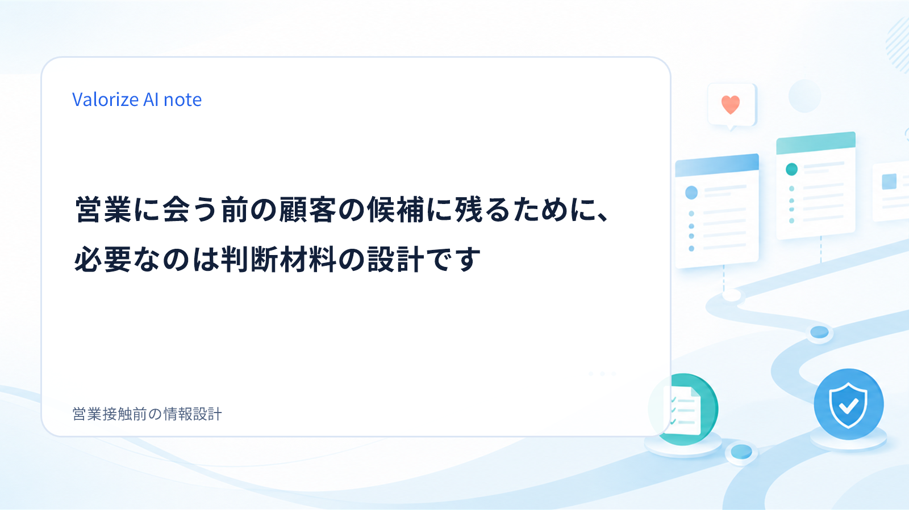
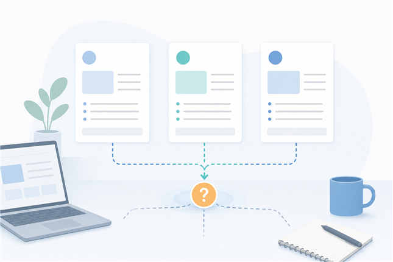
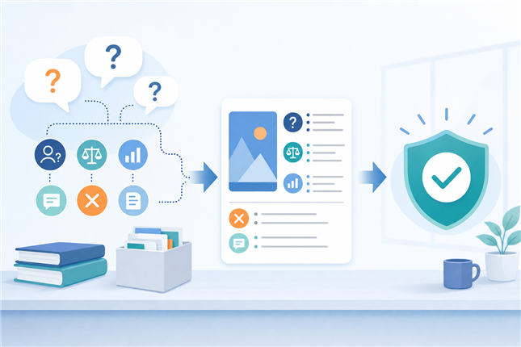

みなさんこんにちは、Valorize AIの斎藤です。
問い合わせが少ない。資料請求が思ったほど伸びない。商談の入口が増えない。
BtoBの営業・マーケティングでは、こうした悩みを聞くことがよくあります。すると、まず考えたくなるのは「もっと集客を増やさないといけない」「記事や資料を増やさないといけない」という方向です。
もちろん、接点を増やすことは大切です。そもそも見つけてもらえなければ、検討の土俵にも上がれません。
ただ、もう一つ見落としやすいことがあります。
それは、営業が説明する前に、すでに候補から外れている検討者がいるかもしれない、ということです。
私は、営業接触前の顧客に必要なのは、コンテンツの量を増やすことではなく、比較・社内説明・不安解消に使える判断材料を設計することだと考えています。
今回は、問い合わせ数だけでは見えにくい「営業に会う前の検討」を、判断材料という観点から整理してみます。
顧客は、営業に会う前から候補を絞っている
BtoBの購買では、顧客が営業担当者と話す前に、すでに多くの情報を集めています。
Web検索、提供企業のWebサイト、比較記事、導入事例、セミナー、展示会、業界メディア、場合によっては生成AI。情報源は一つではありません。
民間調査でも、BtoB購買に関わる人が、営業担当者と接触する前に購買判断に関わる情報へ到達している傾向や、検討段階で複数の情報源を使いながら比較対象を絞っている傾向が示されています。
ここで大事なのは、「営業に会う前にすべて決まっている」と言い切ることではありません。実際には、商材の金額、導入難易度、関係者の数、顧客の状況によって検討の進み方は変わります。
ただ、少なくとも「詳しいことは営業が会ってから説明すればよい」という前提だけでは、少し危うくなっています。
顧客は営業に会う前から、候補に入れる会社と、候補から外す会社を少しずつ分けています。会社案内や機能説明を読んで終わりではなく、「自社に関係ありそうか」「費用感は合いそうか」「社内で説明できそうか」「他社と比べて何が違うのか」を見ています。
つまり、営業接触前の情報は、集客の補助ではありません。候補に残るかどうかに関わる判断材料として見直す必要があります。
問い合わせ数だけでは、見えない失注に気づけない
問い合わせ数や資料請求数は、分かりやすい指標です。
先月より増えた。広告経由が減った。検索経由が伸びた。こうした変化は、マーケティングや営業の状況を把握するうえで重要です。
一方で、問い合わせ数だけを見ていると、見えないものがあります。
それは、問い合わせる前に候補から外れた検討者です。
たとえば、ある顧客が自社のサイトを見たとします。サービス概要は分かった。機能も何となく理解できた。でも、料金感が分からない。自社の課題に合うのか分からない。導入後のイメージが持てない。他社との違いも説明しにくい。
この状態では、顧客はわざわざ問い合わせる前に、別の候補へ進むかもしれません。
もちろん、問い合わせ前に候補から外れた人数を正確に把握することは簡単ではありません。アクセス解析を見ても、離脱した人が何に不安を感じたのかまでは分かりません。
だからこそ、問い合わせが増えない理由を流入不足だけで考えると、重要な論点を見落とします。
本当は、顧客が比較する途中で迷っていたのかもしれません。社内で説明する材料が足りなかったのかもしれません。営業に聞くほどではないけれど、先に解消しておきたい不安が残っていたのかもしれません。
問い合わせが増えない理由を流入不足だけで考えると、営業に会う前の検討者がどこで不安になり、どこで比較から外したのかを見落とします。

必要なのは、会社が言いたい情報ではなく判断材料
営業接触前の情報設計で大切なのは、「何を発信するか」だけではありません。
もっと大事なのは、顧客が何を判断したいのかです。
企業側は、自社の強み、機能、実績、こだわりを伝えたくなります。それ自体は必要です。ただ、検討者が知りたいことと、企業が言いたいことは、いつも同じではありません。
検討者が見ているのは、たとえば次のようなことです。
- 自社の課題に本当に合いそうか
- 費用感や導入負荷を社内で説明できそうか
- 似たような企業で使われているのか
- 他社と比べたときに、何を理由に選べるのか
- 導入後に失敗しそうな不安を下げられるか
これは、細かいチェックリストを作りましょう、という話ではありません。
営業に会う前の顧客は、すでに自分なりに比較し、社内で説明する準備をし、不安を減らそうとしています。そのときに必要なのは、企業側の一方的な説明ではなく、顧客が自分の状況に引き寄せて考えられる判断材料です。
たとえば料金、導入事例、課題との適合、差別化、第三者情報は、単なるコンテンツの種類ではありません。顧客が「この会社を候補に残してよいか」を考えるための材料です。
だから、営業前の情報設計では、何を発信するかよりも、顧客が比較し、社内で説明し、不安を下げるために何が足りないかを見るべきです。
判断材料の種は、営業現場にすでにある
では、判断材料はどこから見つければよいのでしょうか。
新しい記事を大量に作る。資料を一から作り直す。専門的なコンテンツ制作体制を整える。もちろん、必要になる場面はあります。
ただ、中小企業にとって、それを最初から大きく進めるのは簡単ではありません。営業もマーケティングも限られた人数で動いていることが多く、発信のためだけに十分な時間を取れないこともあります。
そこで見直したいのが、営業現場にすでにある情報です。
商談で何度も聞かれる質問。比較されるポイント。提案時に毎回説明している前提。失注後に分かった不安。決裁者に上がるときに詰まりやすい論点。

これらは、営業担当者が個別の商談で対応しているだけだと、その場限りの説明で終わってしまいます。
しかし、よく聞かれる質問を営業前に読める形へ変えると、顧客は問い合わせる前に不安を下げられます。比較されるポイントを整理しておくと、顧客は社内で説明しやすくなります。失注理由を振り返ると、候補から外れる前に補うべき情報が見えてきます。
ここで扱いたいのは、営業の次アクションを作るための情報ではありません。未接触の顧客が、営業に会う前に読んで考えるための情報です。
情報設計は、記事を量産する仕事ではありません。営業現場で繰り返し聞かれる顧客の迷いを、営業前に読める判断材料へ変える仕事です。
営業前の情報が整うほど、営業は個別事情に向き合える
営業接触前の情報設計という話をすると、「営業の出番が減るのでは」と感じる方もいるかもしれません。
私は、むしろ逆だと思っています。
一般的な説明や基本情報は、営業に会う前に顧客が確認しやすくなっています。その分、営業担当者に期待される価値は、単なる情報提供ではなく、顧客固有の事情を踏まえた提案や、まだ整理されていない課題の引き出しに寄っていきます。
営業前の情報が不足していると、商談の時間は基本説明に使われがちです。
「何をしている会社ですか」
「どんな機能がありますか」
「他社と何が違いますか」
「費用はどれくらいですか」
もちろん、これらの質問に答えることは大切です。ただ、毎回そこから始まると、営業は顧客固有の事情まで深く入る前に時間を使ってしまいます。
一方で、営業前に判断材料が整っていれば、顧客は一定の理解を持った状態で相談できます。営業は一般説明を繰り返すだけでなく、「御社の場合はどこが論点になりそうか」「社内で誰を巻き込む必要があるか」「本当に解くべき課題は何か」といった対話に入りやすくなります。
営業に会う前の判断材料を整えることは、営業の出番を減らすためではありません。営業が本当に対話すべき個別事情に集中するための準備です。
コンテンツ量ではなく、判断材料の設計を見る
問い合わせが少ないとき、コンテンツを増やすこと自体が悪いわけではありません。
ただし、増やす前に見たいのは、その情報が顧客の判断に使えるかどうかです。
顧客は営業に会う前から、複数の情報源を見て候補を絞っています。問い合わせ数だけでは、候補から外れた理由は見えません。検討者が必要としているのは、企業側が言いたい説明だけではなく、比較・社内説明・不安解消に使える判断材料です。
そして、その判断材料の種は、営業現場にすでにあります。質問、反論、比較観点、失注理由。これらを営業後の振り返りだけに留めず、営業前の顧客が読める形へ戻していくことが大切です。
営業接触前の顧客に必要なのは、コンテンツ量ではありません。
比較できること。社内で説明できること。不安を下げられること。
この3つを支える判断材料を設計できているかどうかが、営業に会う前の候補選定で残るための重要な土台になります。
もし、自社の営業前の情報設計でも同じような課題を感じている場合は、まず現状を整理するところからお手伝いできますので、お気軽にご連絡ください！
https://valorize-ai.com/